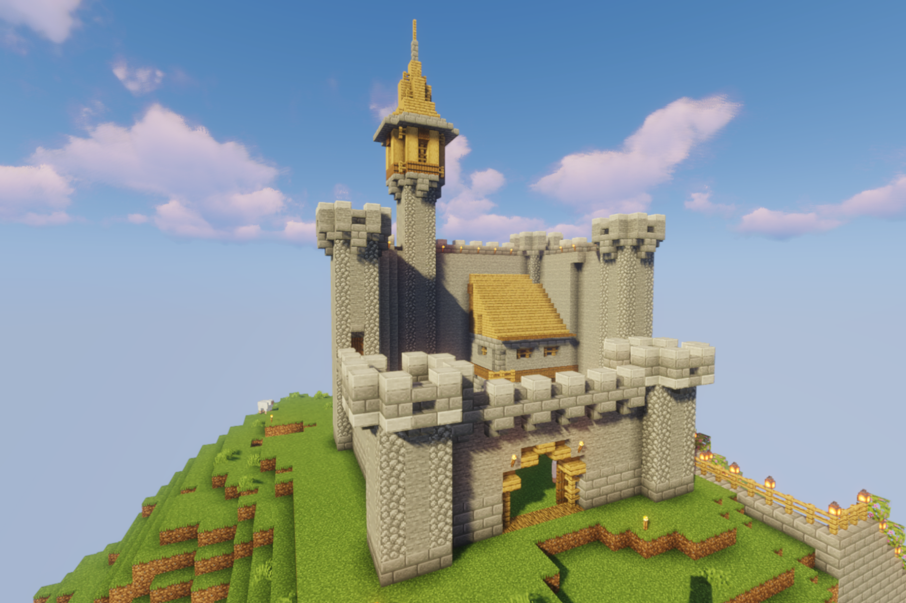
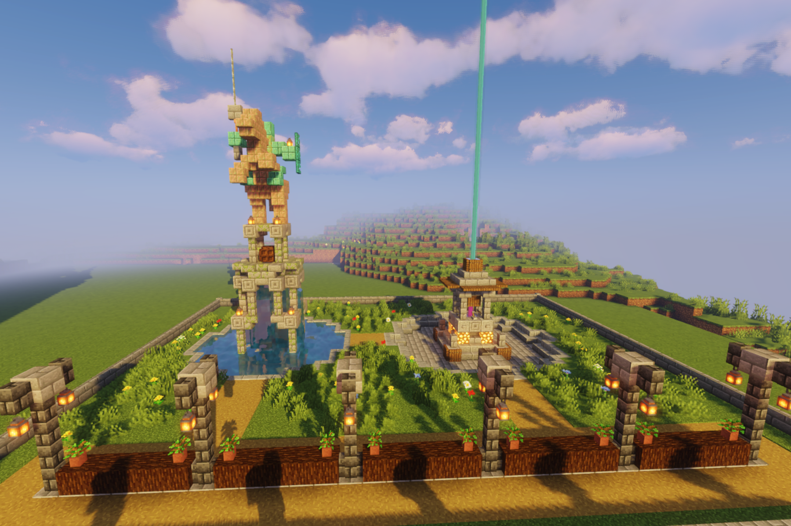

Minecraft aku gunakan untuk menuangkan ide-ide aneh
Kadang kala aku membuat sesuatu yang indah bersama teman estetikaku Verock12
Benteng

Benteng sebuah tempat pertahanan yang kuat
Terinspirasi dari teman
Penbuatannya memakan waktu cukup singkat yakni 3 jam lengkap dengan ruangan bawah tanah
Kastil

Kastil adalah kerajaan kecil yang damai lengkap dengan pertahanan yang hampir menyaingi benteng
Dibuat bersama teman (Verock12)
Penbuatannya cukup lama mungkin memakan waktu 3 hari lengkap dengan ruangan bawah tanah dan dekorasi
Taman

Taman merupakan tempat yang indah nan damai
Dibantu oleh teman (Verock12 (Patung kuda dengan air mancur))
Penbuatannya memakan waktu cukup singkat kira-kira 3 jam